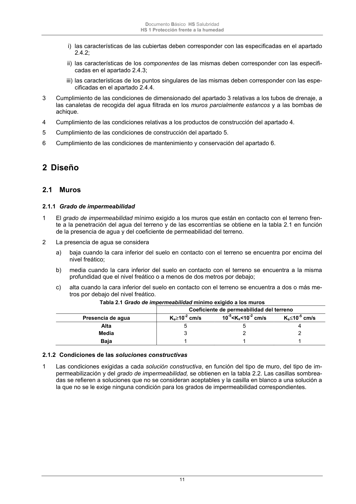

DB-HS · Página 11 · versión 2022-06-14
SHA256: 68df3caacc95f71aee2ec1ba7b2c65ae66155c21e3a8785521b8fdd4fd640d3b · página física 11 de 184 · métodos de encabezado
solo si están cotejados.
Formatos: Markdown · JSON de bloques · PDF p. 11 · imagen PNG
Documento Básico HS Salubridad HS 1 Protección frente a la humedad 11 i) las características de las cubiertas deben corresponder con las especificadas en el apartado 2.4.2; ii) las características de los componentes de las mismas deben corresponder con las especifi- cadas en el apartado 2.4.3; iii) las características de los puntos singulares de las mismas deben corresponder con las espe- cificadas en el apartado 2.4.4. 3 Cumplimiento de las condiciones de dimensionado del apartado 3 relativas a los tubos de drenaje, a las canaletas de recogida del agua filtrada en los muros parcialmente estancos y a las bombas de achique. 4 Cumplimiento de las condiciones relativas a los productos de construcción del apartado 4. 5 Cumplimiento de las condiciones de construcción del apartado 5. 6 Cumplimiento de las condiciones de mantenimiento y conservación del apartado 6. 2 Diseño 2.1 Muros 2.1.1 Grado de impermeabilidad 1 El grado de impermeabilidad mínimo exigido a los muros que están en contacto con el terreno fren- te a la penetración del agua del terreno y de las escorrentías se obtiene en la tabla 2.1 en función de la presencia de agua y del coeficiente de permeabilidad del terreno. 2 La presencia de agua se considera a) baja cuando la cara inferior del suelo en contacto con el terreno se encuentra por encima del nivel freático; b) media cuando la cara inferior del suelo en contacto con el terreno se encuentra a la misma profundidad que el nivel freático o a menos de dos metros por debajo; c) alta cuando la cara inferior del suelo en contacto con el terreno se encuentra a dos o más me- tros por debajo del nivel freático. Tabla 2.1 Grado de impermeabilidad mínimo exigido a los muros Coeficiente de permeabilidad del terreno Presencia de agua Ks10-2 cm/s 10-5<Ks<10-2 cm/s Ks10-5 cm/s Alta 5 5 4 Media 3 2 2 Baja 1 1 1 2.1.2 Condiciones de las soluciones constructivas 1 Las condiciones exigidas a cada solución constructiva, en función del tipo de muro, del tipo de im- permeabilización y del grado de impermeabilidad, se obtienen en la tabla 2.2. Las casillas sombrea- das se refieren a soluciones que no se consideran aceptables y la casilla en blanco a una solución a la que no se le exige ninguna condición para los grados de impermeabilidad correspondientes.
